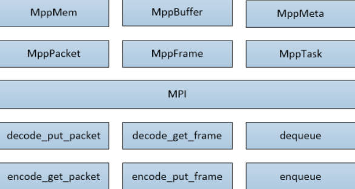
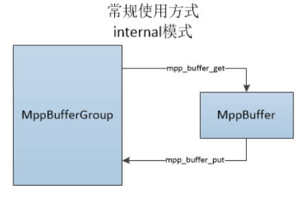
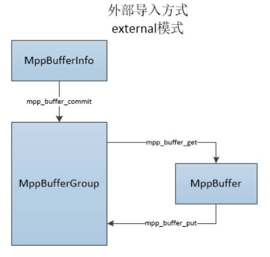
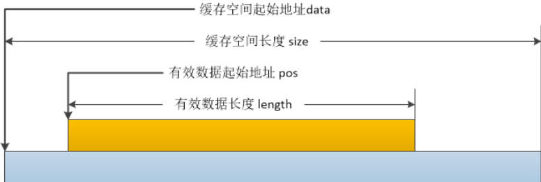
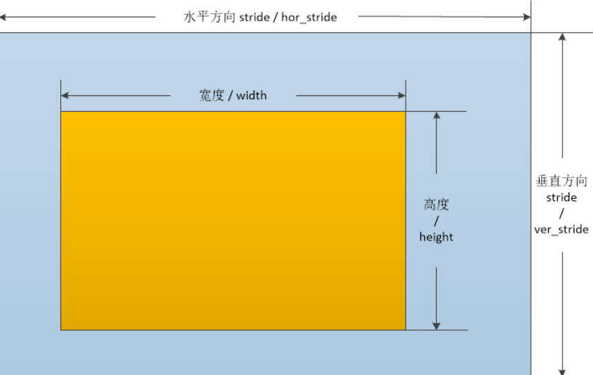
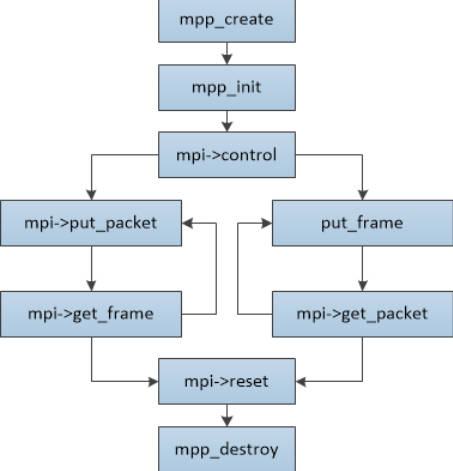

一、MPP 介绍
以下为 RK 官方 MPP 文档的 GitHub 链接，包含了中文/英文的 MPP 开发指南：
https://github.com/rockchip-linux/mpp/tree/develop/doc
MPP （Media Process Platform）是 Rockchip 提供的一套 硬件视频编解码中间件 ，用于统一调用芯片上 VPU（Video Processing Unit） 硬件资源，实现高性能视频编码和解码。该平台对应用软件屏蔽了芯片相关的复杂底层处理，其目的是为了屏蔽不同芯片的差异，为使用者提供统一的视频媒体处理接口（Media Process Interface，缩写 MPI）。MPP 提供的功能包括：
视频解码
H.265 / H.264 / H.263 / VP9 / VP8 / MPEG-4 / MPEG-2 / MPEG-1 / VC1 / MJPEG / AV1
视频编码
H.265 / H.264 / VP8 / MJPEG
视频处理
视频拷贝，缩放，色彩空间转换，场视频解交织（Deinterlace）
核心功能：
硬件解码（VDEC） ：支持 H.264、H.265/HEVC、VP8、VP9、AV1 等格式。硬件编码（VENC） ：支持 H.264、H.265、JPEG、AV1 等格式。统一 API 接口 ：通过 C API 或 V4L2，简化上层应用调用。高性能多路处理 ：支持多路视频流并发编解码，降低 CPU 占用，节省功耗。跨平台 ：Linux/Android 平台均可使用。开源支持 ：源码开源，可根据项目需求修改和移植。
二、MPP 结构
MPP 在源码层面主要分为以下模块：
模块
功能
OSAL 跨平台底层封装：内存、线程、时间、日志等
MPI / Mpp API 用户调用接口：编码/解码任务提交与获取
Base 核心数据结构：MppBuffer、MppFrame、MppPacket、MppTask
Codec 比特流解析与处理逻辑（Parser + WorkFlow）
HAL 硬件抽象层，将 Codec 命令映射到 VPU 寄存器并触发执行
典型数据流：
1 用户应用 → MPI API → MPP Task → Codec Parser → HAL → VPU → 输出帧/比特流
调用流程简化：
1 2 3 4 5 6 7 8 9 10 11 12 13 应用（如 FFmpeg + libva/VAAPI） MPI / MPP API 调用
2.1 代码目录结构
1 2 3 4 5 6 7 8 9 10 11 12 13 14 15 16 17 18 19 20 21 22 23 24 25 26 27 28 29 30 31 32 33 34 35 36 37 38 39 40 41 42 43 44 45 46 47 48 49 50 51 52 53 54 55 56 57 58 59 60 61 62 63 64 65 66 67 68 69 70 71 72 73 74 75 76 77 78 79 80 81 82 83 84 85 86 87 88 89 90 91 92 93 94 95 96 97 98 99 100 101 102 103 104 105 106 107 108 109 110 111 112 113 114 115 116 117 118 119 120 121 122 123 124 125 126 127 128 129 130 131 132 133 134 135 136 137 138 139 140 141 142 143 144 145 146 147 148 149 150 151 152 153 154 155 156 157 158 159 160 161 162 ---- top |----- build CMake out-of-source build directory | | |----- cmake cmake script directory | | |----- android android build directory | | |----- linux linux build directory | | |----- vc10-x86_64 visual studio 2010 on x86_64 build directory | | |----- vc12-x86_64 visual studio 2013 on x86_64 build directory |----- doc design documents of mpp |----- inc header file for external usage, including | platform header and mpi header |----- mpp Media Process Platform : mpi function private | | implement and mpp infrastructure (vpu_api | | private layer) | | |----- base base components including MppBuffer, MppFrame, | | MppPacket, MppTask, MppMeta, etc. | | |----- common video codec protocol syntax interface for both | | codec parser and hal | | |----- codec all video codec parser, convert stream to | | | protocol structure | | | | |----- inc header files provided by codec module for | | | external usage | | | | |----- dec | | | | | | |----- av1 av1 parser | | | | | | |----- avs avs parser | | | | | | |----- avs2 avs2 parser | | | | | | |----- h263 h263 parser | | | | | | |----- h264 h264 parser | | | | | | |----- h265 h265 parser | | | | | | |----- m2v mpeg2 parser | | | | | | |----- mpg4 mpeg4 parser | | | | | | |----- vp8 vp8 parser | | | | | | |----- vp9 vp9 parser | | | | | | |----- jpeg jpeg parser | | | | |----- enc | | | | |----- dummy encoder controllor work flow sample | | | | |----- h264 h264 encoder | | | | |----- h265 h265 encoder | | | | |----- jpeg jpeg encoder | | | | |----- vp8 vp8 encoder | | |----- hal Hardware Abstract Layer (HAL): modules used in mpi | | | | |----- inc header files provided by hal for external usage | | | | |----- common shared HAL code | | | | |----- rkdec rockchip hardware decoder register generation | | | | | | |----- h264d generate register file from H.264 syntax info | | | | | | |----- h265d generate register file from H.265 syntax info | | | | | | |----- vp9d generate register file from vp9 syntax info | | | | | | |----- av1d generate register file from AV1 syntax info | | | | | | |----- avsd generate register file from AVS syntax info | | | | | | |----- avs2d generate register file from AVS2 syntax info | | | | |----- rkenc rockchip hardware encoder register generation | | | | | | |----- h264e generate register file from H.264 syntax info | | | | | | |----- h265e generate register file from H.265 syntax info | | | | | | |----- jpege generate register file from jpeg syntax info | | | | |----- vpu vpu register generation library | | | | |----- av1d generate register file from AV1 syntax info | | | | |----- h263d generate register file from H.263 syntax info | | | | |----- h264e generate register file from H.264 syntax info | | | | |----- jpegd generate register file from jpeg syntax info | | | | |----- jpege generate register file from jpeg syntax info | | | | |----- m2vd generate register file from mpeg2 syntax info | | | | |----- mpg4d generate register file from mpeg4 syntax info | | | | |----- vp8d generate register file from vp8 syntax info | | | | |----- vp8e generate register file from vp8 syntax info | | |----- vproc video process modules | | | | |----- iep image enhancement processor | | | | |----- iep2 image enhancement processor v2 | | | | |----- vdpp video post processor | | |----- legacy generate new libvpu to include old vpuapi path | | and new mpp path | | |----- test mpp internal video protocol unit test and demo |----- test mpp buffer/packet component unit test and | mpp/mpi/vpu_api demo |----- out final release binary output directory | | |----- bin executable binary file output directory | | |----- inc header file output directory | | |----- lib library file output directory |----- osal Operation System Abstract Layer: abstract layer | | for different operation system | | |----- allocator supported allocator including Android ion and | | Linux drm | | |----- android google's android | | |----- inc osal header file for mpp modules | | |----- linux mainline linux kernel | | |----- windows microsoft's windows | | |----- test OASL unit test |----- tools coding style format tools |----- utils small util functions
test/ 下的程序不构建库 ，只产出可执行文件。它们链接 libmpp.so（或静态库）+ utils/ 这个内部静态库，跑在板子的用户态。
1 2 3 4 5 6 7 8 mpp/ - MPP 核心实现（MPI + base + codec + hal）MPI /公共定义）MPP 功能测试与示例代码CMake 构建脚本配置
2.2 模块结构
1 2 3 4 5 6 7 8 9 10 11 12 13 14 15 16 17 18 19 20 21 22 23 24 25 26 27 28 29 30 31 32 33 34 35 36 37 38 39 40 41 42 43 44 +------------------------------------------------------+ 上层应用/多媒体框架（Linux/Android） | OpenMax / gstreamer / libva / FFmpeg (hwaccel) |------------------------+ ▼ +---------------------------- MPP ----------------------------+ | | +--------------------+ +----------------------------+ | | MPI / MPP | | OSAL | | | Media Process API | | Operation System Abstract | | | (Open/Init/Put/Get) | | Layer: memory/thread/log | | +--------------------+ +----------------------------+ | | | ▼ | +------------------+ | | base | | | core components: | | | MppBuffer / | | | MppFrame / | | | MppPacket / | | | MppTask / MppMeta | | +------------------+ | | | ▼ | +------------------+ | | codec | | | parser + encoder/ | | | decoder workflows | | +------------------+ | | | ▼ | +------------------+ | | HAL | | | Hardware Abstraction | | | - register generator | | | for VPU codecs | | +------------------+ |-------------------------------+ ▼ +------------------------ kernel ----------------------+ | | vcodec_service / v4l2 hardware drivers | (stateless frame hw codec kernel interface) |
MPI / MPP 层
MPP 的核心对外接口，提供统一的 媒体处理 API （打开/初始化/送入帧/取出结果）。
管理内部任务队列、帧/包队列，负责上层与内部 codec/HAL 的协作。
是上层应用调用硬件编解码的入口。
OSAL（系统抽象层）
屏蔽不同操作系统差异（内存分配、线程、时间、日志等）。
保证 MPP 在 Linux、Android 等平台可跨平台编译和运行。
Base（核心数据结构层）
定义 MPP 的核心数据类型：
MppBuffer ：统一缓冲区对象（dma-buf / ion / drm 等）。MppFrame ：视频帧结构。MppPacket ：流数据包结构。MppTask / MppMeta ：任务与元数据。
为 codec 层和 HAL 层提供统一数据承载。
Codec（编/解码工作流 + 解析）
对具体视频格式（H.264/H.265/VP8/VP9/JPEG 等）实现解析器、控制流程、逻辑。
分析流数据、组织 codec 工作任务、与 HAL 交互。
HAL（硬件抽象层）
将 codec 解析结果映射为硬件寄存器设置，生成配合内核驱动的配置。
核心作用是与 VPU（Video Processing Unit）硬件协作：
生成给 vcodec_service 内核驱动的寄存器命令。
支持多种编码/解码格式。
HAL 是 MPP 与真实硬件的桥梁。
内核层（kernel）
MPP 通过 HAL 与 SoC 的硬件编/解码内核驱动交互：
vcodec_service ：Stateless API kernel side。v4l2 ：V4L2 codec interface（部分平台）。
最终由内核驱动调度 VPU 硬件处理 。
2.3 命名规则
mpi = MPP Interface（rk_mpi.h 那套对外 API）enc / dec = encoder / decodermt = multi-thread（输入输出分 线程，不是多实例）nt = no-thread / no-timeout（关闭 MPP 内部解码线程，调用者一次 decode() 包揽 put+get）multi = multi-instance（多路并发，多实例 ）rc = rate control（码率控制）rc2 = “RC 测试 v2″，相对于已废弃的 mpi_rc_test
容易搞混的是 mt vs multi
mt（multi-thread）：1 个 编/解码上下文，2 个 线程（一个喂、一个取）multi：N 个 上下文，N 个 线程，每个互不干扰，用来测吞吐
2.4 接口结构
下图为 MPI 接口使用的主要数据结构：

MppMem 为 C 库 malloc 内存的封装。MppBuffer 为硬件用的 dmabuf 内存的封装。MppPacket 为一维缓存封装，可以从 MppMem 和 MppBuffer 生成，主要用于表示码流数据。MppFrame 为二维帧数据封装，可以从 MppMem 和 MppBuffer 生成，主要用于表示图像数据。使用 MppPacket 和 MppFrame 就可以简单有效的完成一般的视频编解码工作。
2.4.1 MppBuffer
MppBuffer 主要用于描述供硬件使用的内存块（即缓存），提供了内存块的分配、释放和加减引用等功能，目前支持的分配器有：ion、drm 和 dma_heap。MppBuffer 几个重要的参数成员如下：
成员名称
成员类型
描述说明
ptr
void *
表示内存块的起始虚拟地址。
size
size_t
表示内存块的大小。
fd
int
表示内存块的用户态空间文件句柄。
在解码过程中，解码图像的缓存通常需要在固定的缓存池里进行轮转，为了实现这一点，MPP 在 MppBuffer 基础之上又定义了 MppBufferGroup。MppBuffer 的使用方式有两种：常规使用方式和外部导入方式，由于二者的内存分配方式不同，也称为 internal 模式和 external 模式。
在 MppBuffer 常规使用方式下，MppBufferGroup 由 MPP 内部生成和维护。通过 mpp_buffer_get 和 mpp_buffer_put 对内存块进行申请和释放，如下图所示：

其流程大致如下：
1 2 3 4 5 6 7 8 9 10 11 12 13 14 15 16 17 18 19 20 21 22 23 24 25 26 27 28 29 30 MppBufferGroup group = NULL ;while (!end_of_deconding) {
这种方式可以实现解码器在解码过程中零拷贝输出 （解码器的输出帧与解码器内部使用的参考帧用是同一帧），但不容易实现零拷贝显示 （解码器的输出帧不一定在显示端可以直接显示），同时要求用户知道需要给解码器开多大的空间进行解码。
另一种使用方式是把 MppBufferGroup 完全做为一个缓存的管理器，用于管理外部导入的缓存。其使用方式如下图：

其流程大致如下：
1 2 3 4 5 6 7 8 9 10 11 12 13 14 15 16 17 18 19 20 21 22 23 24 25 26 27 28 29 30 31 32 33 34 MppBufferGroup group = NULL ;16 ];1 ]);while (!end_of_decoding) {
这种方式可以使得解码器使用外部的缓存，可以对接 OpenMax/gstreamer 这样的中间件，也方便对接用户己有的上层代码，便于实现零拷贝显示。
2.4.2 MppPacket
MppPacket 主要用于描述一维码流的相关信息，特别是有效数据的位置与长度。MppPacket 几个重要的参数成员如下：
成员名称
成员类型
描述说明
data
void *
表示缓存空间的起始地址。
size
size_t
表示缓存空间的大小。
pos
void *
表示缓存空间内有效数据的起始地址。
length
size_t
表示缓存空间内有效数据的长度。如果在 decode_put_packet 调用之后 length 变为 0，说明此包码流己消耗完成。
其关系如下图所示：

MppPacket的其他配置参数成员如下：
成员名称
成员类型
描述说明
pts
RK_U64
表示显示时间戳（Present Time Stamp）。
dts
RK_U64
表示解码时间戳（Decoding Time Stamp）。
eos
RK_U32
表示码流结束标志（End Of Stream）。
buffer
MppBuffer
表示MppPacket对应的MppBuffer。
flag
RK_U32
表示MPP内部使用的标志位，包含如下标志：
MppPacket 作为描述一维内存的结构体，在使用时需要使用 malloc 出来的内存或者使用 MppBuffer 的内存进行初始化。在释放 MppPacket 时有几种情况：
如果是外部 malloc 地址配置到 MppPacket，不会做 free 释放处理，如下示例；
1 2 3 4 5 6 7 void *data = malloc (size);NULL ;free (data);
如果是拷贝产生的 MppPacket，会做 free 释放内存，如下示例；
1 2 3 4 5 6 7 8 9 10 11 void *data = malloc (size);NULL ;NULL ;free (data);
如果是 MppBuffer 产生的 MppPacket，会在生成时对 MppBuffer 加引用，在释放时对 MppPacket 减引用。
1 2 3 4 5 6 7 8 MppBuffer buffer;NULL ;NULL , &buffer, size);
2.4.3 MppFrame
MppFrame 主要用于定义二维图像缓存的相关信息，有效数据的位置与长度。MppFrame 几个重要的参数成员如下：
成员名称
成员类型
描述说明
width
RK_U32
表示水平方向像素数，单位为像素个数。
height
RK_U32
表示垂直方向像素数，单位为像素个数。
hor_stride
RK_U32
表示垂直方向相邻两行之间的距离，单位为byte数。
ver_stride
RK_U32
表示图像分量之间的以行数间隔数，单位为1。

MppFrame 的其他配置参数成员如下：
成员名称
成员类型
描述说明
mode
RK_U32
表示图像数据帧场属性。
pts
RK_U64
表示图像的显示时间戳（Present Time Stamp）。
dts
RK_U64
表示图像的解码时间戳（Decoding Time Stamp）。
eos
RK_U32
表示图像的结束标志（End Of Stream）。
errinfo
RK_U32
表示图像的错误标志，是否图像内有解码错误。
discard
RK_U32
表示图像的丢弃标志，如果图像解码时的参考关系不满足要求，则这帧图像会被标记为需要丢弃，不被显示。
buf_size
size_t
表示图像需要分配的缓存大小，与图像的格式相关，也与解码数据的格式相关。
info_change
RK_U32
如果为真，表示当前 MppFrame 是一个用于标记码流信息变化的描述结构，说明了新的宽高，stride，以及图像格式。 可能的 info_change 原因有： 图像序列宽高变化。 图像序列格式变化，如 8bit 变为 10bit。 一旦 info_change 产生，需要重新分析解码器使用的内存池。
fmt
MppFrameFormat
表示图像色彩空间格式以及内存排布方式。
color_range
MppFrameColorRange
表示图像数据彩色空间范围： YUV full range：0 ~ 255（8bit） YUV limit range：16 ~ 235（8bit）。
buffer
MppBuffer
表示 MppFrame 对应的 MppBuffer。
对于解码器来说，MppFrame 是其输出的信息结构体，码流解码后的信息（包括像素数据与 pts，错误信息等相关信息）都需要带在 MppFrame 结构体给调用者。MppFrame 中的 pts/dts，以及 eos 标志，就是继承自对应的输入 MppPacket。
同时，一旦发现码流分辨率改变，MppFrame 中的 info_change 标志就会对应置位，向用户通知发生了 info_change 事件，需要用户进行缓存池修改处理。
FBC 与 Tile 格式
MppFrameFormat 的高位标志位支持 FBC（Frame Buffer Compression）和 Tile 两种特殊的内存排布方式。
FBC 是一种帧缓存压缩格式，可以减少图像数据在内存和总线中的占用带宽。MppFrameFormat 中定义了以下 FBC 类型：
FBC类型
标志位
说明
无FBC
0x0
默认情况，不使用帧缓存压缩
AFBC_V1
0x00100000
用于 ISP 输出，具有基于宽高自动计算的 payload offset
AFBC_V2
0x00200000
用于视频解码器输出，payload offset 存储在 header 首地址的前 32 位中，始终为 0
RKFBC
0x00400000
用于视频解码器输出和编码器输入，具有基于宽度自动计算的 header stride
FBC 格式与 Tile 格式不能同时存在。
Tile 格式通过 bit 25 标志位表示，启用后图像数据按 Tile 排布存储，而非按行连续存储。Tile 排布可以提升内存访问效率，在某些硬件上可以获得更好的性能。
对于使用 FBC 或 Tile 格式的 MppFrame，图像缓存的计算方式与普通格式不同，需要预留额外的 header 空间。解码器在使用 FBC 输出时，会在 info_change 事件中通过 fmt 字段通知用户当前的输出格式，用户需要根据格式类型正确计算所需的缓存大小。
如需配置解码器输出为 FBC 或 Tile 格式，可通过 control 接口的 MPP_DEC_SET_OUTPUT_FORMAT 或 MPP_DEC_SET_FRAME_INFO 命令来实现。MPP_DEC_SET_OUTPUT_FORMAT 用于配置解码器的输出图像格式，MPP_DEC_SET_FRAME_INFO 用于配置解码器的默认宽高及格式信息。两个命令的调用时机均在 mpp_init 之后、正式解码之前。具体配置值通过在 MppFrameFormat 的基础色域格式上叠加 FBC 或 Tile 标志位来设定，例如将 NV12 格式叠加 AFBC_V2 标志位即表示输出 AFBC_V2 压缩的 NV12 图像。
2.4.4 MppCtx
MppCtx 是提供给用户使用的 MPP 实例上下文句柄，用于指代解码器或编码器实例。
用户可以通过 mpp_create 接口获取 MppCtx 实例以及 MppApi 结构体，再通过 mpp_init 来初始化 MppCtx 的编解码类型与格式，之后通过 decode_xxx/encode_xxx 以及 poll/dequeuer/enqueue 接口来进行访问，使用结束时通过 mpp_destroy 接口进行销毁。

如上图所示，mpp_create，mpp_init，mpp_destroy 是操作 MppCtx 接口的过程，其中 mpp_create 接口也获取到了 MPI 接口结构体 MppApi，真正的编码与解码过程是通过调用 MppApi 结构体里内的函数指针来实现，也就是上图中红框内的部分。红框内的函数调用分为编解码流程接口 put/get_packet/frame 和相关的 control 和 reset 接口。
2.4.5 MppApi（MPI）
MppApi 结构体封装了 MPP 的对外 API 接口，用户通过使用 MppApi 结构中提供的函数指针实现视频编解码功能，其结构如下：
成员名称
成员类型
描述
size
RK_U32
MppApi结构体大小。
version
RK_U32
MppApi结构体版本。
decode
函数指针
MPP_RET (*decode)(MppCtx ctx, MppPacket packet, MppFrame *frame)
decode_put_packet
函数指针
MPP_RET (*decode_put_packet)(MppCtx ctx, MppPacket packet)
decode_get_frame
函数指针
MPP_RET (*decode_get_frame)(MppCtx ctx, MppFrame *frame)
encode
函数指针
MPP_RET (*encode)(MppCtx ctx, MppFrame frame, MppPacket *packet)
encode_put_frame
函数指针
MPP_RET (*encode_put_frame)(MppCtx ctx, MppFrame frame)
encode_get_packet
函数指针
MPP_RET (*encode_get_packet)(MppCtx ctx, MppPacket *packet)
poll
函数指针
MPP_RET (*poll)(MppCtx ctx, MppPortType type, MppPollType timeout)
dequeue
函数指针
MPP_RET (*dequeue)(MppCtx ctx, MppPortType type, MppTask *task)
enqueue
函数指针
MPP_RET (*enqueue)(MppCtx ctx, MppPortType type, MppTask task)
reset
函数指针
MPP_RET (*reset)(MppCtx ctx)
control
函数指针
MPP_RET (*control)(MppCtx ctx, MpiCmd cmd, MppParam param)
三、实例
3.1 解码器
官方提供多个基本的解码器 demo 实现。解码器 demo 为 mpi_dec_test 系列程序，包括使用 decode_put_packet 和 decode_get_frame 接口的单线程 mpi_dec_test、多线程的 mpi_dec_mt_test、多实例的 mpi_dec_multi_test 以及使用 no_thread 模式直接调用 decode 接口的 mpi_dec_nt_test。
下面以 mpi_dec_test 为例，学习下 MPP 解码器的使用。首先运行测试用例 mpi_dec_test，查看运行效果：
1 2 3 4 5 6 7 8 9 10 11 12 13 14 15 16 17 18 19 20 21 22 23 24 25 26 27 28 29 30 31 $ ./mpi_dec_test
帮助文档可以分为两部分：一是 mpi_dec_test 的命令参数说明；二是码流文件的协议类型说明。
命令参数的描述说明如下：
命令参数
描述说明
-i
输入的码流文件。
-o
输出的图像文件。
-w
图像宽度，单位为像素。
-h
图像高度，单位为像素。
-t
码流文件的协议类型。
-f
图像色彩空间格式以及内存排布方式，默认为 NV12。
-n
最大解码帧数。测试时若码流较长，可仅输出前 n 帧。
-s
MPP 实例数，默认为 1。
-v
日志选项：q 为静默标志；f 为 fps 显示标志。
-slt
输出帧对应的校验文件。
-bufmode
缓冲模式：hi – 半内部分配模式（默认）；i – 纯内部分配模式；e – 纯外部分配模式。
-help
打开帮助文档。
mpi_dec_test 的命令参数中，输入文件（i）和码流类型（t）为强制要求配置的参数，其他参数如输出文件（o）、图像宽度（w）、图像高度（h）和解码帧数（n）等为可选参数，可以根据不同的测试需求进行配置。
mpi_dec_test 的命令参数中，输出帧对应的校验文件（slt）将输出帧数据转换为对应的循环冗余校验码（具体逻辑见utils/utils.c）。校验文件的大小往往只有几 KB，在芯片的 slt 测试中，将输出帧文件的对比转换成校验文件的对比，可以显著缩短测试周期。
MPP 库支持的输入文件的编码格式（t）为 MPEG2/4、H.263/4/5、VP8/9 和 JPEG 等，id 后的数字为不同编码格式对应的参数值。参数值来源于 OMX 的定义，值得注意的是，HEVC 和 AVS 格式的参数值与其他格式的有显著区别。
下面先实际运行下代码：
1 2 3 4 5 6 7 8 9 10 11 12 13 14 15 16 17 18 19 20 21 22 23 24 25 26 $ ./mpi_dec_test -i /mnt/nfs/orangepi5pro/media-sdk-test/test.h264 -o /mnt/nfs/orangepi5pro/media-sdk-test/build-tree-out.yuv -t 7 -w 640 -h 480 -n 10 -v f96767 ]: mpi_dec_utils: input file /mnt/nfs/orangepi5pro/media-sdk-test/test.h264 size 310407 96767 ]: mpi_dec_utils: cmd parse result:96767 ]: mpi_dec_utils: input file name: /mnt/nfs/orangepi5pro/media-sdk-test/test.h26496767 ]: mpi_dec_utils: output file name: /mnt/nfs/orangepi5pro/media-sdk-test/build-tree-out.yuv96767 ]: mpi_dec_utils: width : 640 96767 ]: mpi_dec_utils: height : 480 96767 ]: mpi_dec_utils: type : 7 96767 ]: mpi_dec_utils: max frames : 10 96767 ]: mpi_dec_test: mpi_dec_test start96767 ]: mpp_info: mpp version: unknown mpp version for missing VCS info96767 ]: mpi_dec_test: 0x5597471180 mpi_dec_test decoder test start w 640 h 480 type 7 96767 ]: mpi_dec_test: 0x5597471180 decode_get_frame get info changed found96767 ]: mpi_dec_test: 0x5597471180 decoder require buffer w:h [640 :480 ] stride [640 :480 ] buf_size 614400 96767 ]: mpi_dec_test: 0x5597471180 decode get frame 0 96767 ]: mpi_dec_test: 0x5597471180 decode get frame 1 96767 ]: mpi_dec_test: 0x5597471180 decode get frame 2 96767 ]: mpi_dec_test: 0x5597471180 decode get frame 3 96767 ]: mpi_dec_test: 0x5597471180 decode get frame 4 96767 ]: mpi_dec_test: 0x5597471180 decode get frame 5 96767 ]: mpi_dec_test: 0x5597471180 decode get frame 6 96767 ]: mpi_dec_test: 0x5597471180 decode get frame 7 96767 ]: mpi_dec_test: 0x5597471180 decode get frame 8 96767 ]: mpi_dec_test: 0x5597471180 decode get frame 9 96767 ]: mpi_dec_test: decode 10 frames time 73 ms delay 5 ms fps 135.51 96767 ]: mpi_dec_test: test success max memory 1.76 MB
代码首先进行参数初始化：
1 2 mpi_dec_test_cmd_init(cmd, argc, argv);
然后就进入到核心：
dec_decode() 可以分作五个阶段：
1 2 3 4 5 6 1. 打开输出文件2. 初始化 buffer manager3. 根据类型初始化 packet 或 frame4. 创建并配置 MPP decoder5. 创建 thread_decode 线程，进入解码循环 6. 解码结束后 reset、deinit、destroy
第一二部分不过多介绍，第三部分会根据输入类型进行区分：
1 2 3 4 5 6 7 8 9 10 cmd->simple = (cmd->type != MPP_VIDEO_CodingMJPEG) ? 1 : 0 ;if (cmd->simple) {NULL , 0 ); else {
H.264/H.265 等普通视频流 -> dec_simple()
MJPEG -> dec_advanced()
原因是 MJPEG 高级路径要求预先告诉解码器输出 frame 和 buffer，而普通 H.264/H.265 是先动态解析，等 info change 后再建 output buffer。
然后创建和初始化解码器：
1 2 mpp_create(&ctx, &mpi);
接下来读取默认解码配置：
1 2 3 4 mpp_dec_cfg_init(&cfg);"base:split_parse" , need_split);
这里的 need_split = 1 很重要。H.264/H.265 文件不是“一个 packet 就是一帧”，可能是：
need_split 让 MPP 内部 parser 自己找帧边界，应用只需要把文件块不断喂进去。
初始化完后，dec_decode() 创建了一个线程：
1 pthread_create(&thd, &attr, thread_decode, &data);
这个线程不是多线程流水线，它只是把实际解码循环放在线程里，方便 frame_num < 0 时主线程可以等用户按 Enter 来停止。
thread_decode 的基本逻辑是：
1 2 3 4 5 if (cmd->simple)while (!data->loop_end && MPP_OK == dec_simple(data)); else while (!data->loop_end)
下面看 dec_simple：
先读一块文件数据：
1 reader_read(cmd->reader, &slot);
这个 reader 来自 mpi_dec_utils.c，内部有后台线程预读文件，把它切成 FileBufSlot。每个 slot 里有：
1 2 3 slot->data
如果已经 EOS，但还没达到目标帧数，就：
1 reader_rewind(cmd->reader);
也就是重新从文件头读，用于无限循环或补齐帧数。
然后把 slot 设置到 packet：
1 2 3 4 mpp_packet_set_data(packet, slot->data);
如果是最后一包：
1 mpp_packet_set_eos(packet);
接下来是两层循环。外层负责送 packet，内层负责取 frame。
送 packet：
1 ret = mpi->decode_put_packet(ctx, packet);
decode_put_packet() 成功，只代表 MPP 接收了这段压缩数据。它不代表马上解码出一帧。而且如果 MPP 输入队列满了，decode_put_packet() 可能失败，所以代码会 sleep 后重试：
然后取 frame：
1 ret = mpi->decode_get_frame(ctx, &frame);
如果返回 MPP_ERR_TIMEOUT，说明当前还没有 frame，它最多重试 30 次，每次 sleep 1 ms：
1 2 3 times--;1 );goto try_again;
拿到 frame 后，第一件要判断的是：
1 if (mpp_frame_get_info_change(frame))
这个 frame 不是像素帧，而是解码器通知你：
我已经解析出视频参数了
宽高是多少
stride 是多少
每个 buffer 需要多大
然后创建输出 buffer group：
1 grp = dec_buf_mgr_setup(data->buf_mgr, buf_size, 24 , cmd->buf_mode);
这里的 24 是 buffer 个数。H.264/H.265 需要参考帧和多帧输出，所以不能只给一两个 buffer。
然后告诉 MPP：
1 2 mpi->control(ctx, MPP_DEC_SET_EXT_BUF_GROUP, grp); NULL );
如果不处理 info change，后面通常拿不到正常图像帧。
如果不是 info change，那就是实际解码帧。代码会读取错误和丢弃信息：
1 2 err_info = mpp_frame_get_errinfo(frame);
如果没有错误，并且配置了输出文件，就写文件：
1 dump_mpp_frame_to_file(frame, data->fp_output);
dump_mpp_frame_to_file() 在 utils 里，会根据 frame 的格式把 buffer 写成原始 YUV/NV12/RGB 文件。它不是显示，也不是转码，只是导出原始帧。
然后统计：
1 2 data->frame_count++;
最后必须释放 frame：
1 mpp_frame_deinit(&frame);
而 dec_advanced() 和 dec_simple() 不一样。JPEG 是完整独立帧，所以它用了更直接的流程：
1 2 3 4 5 6 reader_index_read(cmd->reader, 0 , &slot);
这也是为什么 MJPEG 需要提前 mpp_frame_init() 并设置 buffer，而 H.264/H.265 是等 info change 后再创建 buffer group。
线程结束后，dec_decode() 做：
这个很重要，提前停止、达到帧数停止、出错退出，都应该 reset，否则 MPP 可能打印 leaked buffer。
然后统一释放：
1 2 3 4 5 6 7 mpp_packet_deinit(&data.packet);
总结一下，实现 MPP 解码器，大致按照如下步骤：
1 2 3 4 5 6 7 8 9 10 11 12 13 1. 打开输入文件，创建 reader2. 打开输出文件3. mpp_create() 创建 ctx 4. mpp_ init(ctx, MPP_CTX_ DEC, coding) 初始化解码器5. MPP_DEC_ GET_CFG -> 设置 split_ parse -> MPP_DEC_ SET_CFG 6. 循环读输入 packet 7. decode_ put_packet()，失败就等待重试 8. decode_ get_frame()，没帧就等待重试 9. 如果 info_ change：设置 buffer group，再 SET_INFO_ CHANGE_READY 10. 如果是普通 frame：处理、写文件、frame_ count++、mpp_frame_ deinit()11. EOS 或达到帧数后退出12. mpi->reset()13. mpp_packet_ deinit / mpp_frame_ deinit / mpp_destroy / release buffer group
3.2 编码器
下面以 mpi_enc_test.c 为例，看下编码器的实现。
先看执行效果：
1 2 3 4 5 6 7 8 9 10 11 12 13 14 15 16 17 18 19 20 21 22 23 24 25 26 27 28 29 30 31 $ mpi_dec_test \7 -w 640 -h 480 -n 10 -v f102659 ]: mpi_dec_utils: input file /mnt/nfs/orangepi5pro/media-sdk-test/enc-out.h264 size 23136 102659 ]: mpi_dec_utils: cmd parse result:102659 ]: mpi_dec_utils: input file name: /mnt/nfs/orangepi5pro/media-sdk-test/enc-out.h264102659 ]: mpi_dec_utils: output file name: /mnt/nfs/orangepi5pro/media-sdk-test/enc-dec.yuv102659 ]: mpi_dec_utils: width : 640 102659 ]: mpi_dec_utils: height : 480 102659 ]: mpi_dec_utils: type : 7 102659 ]: mpi_dec_utils: max frames : 10 102659 ]: mpi_dec_test: mpi_dec_test start102659 ]: mpp_info: mpp version: unknown mpp version for missing VCS info102659 ]: mpi_dec_test: 0x558fc6b180 mpi_dec_test decoder test start w 640 h 480 type 7 102659 ]: mpi_dec_test: 0x558fc6b180 loop again102659 ]: mpi_dec_test: 0x558fc6b180 decode_get_frame get info changed found102659 ]: mpi_dec_test: 0x558fc6b180 decoder require buffer w:h [640 :480 ] stride [640 :480 ] buf_size 614400 102659 ]: mpi_dec_test: 0x558fc6b180 decode get frame 0 102659 ]: mpi_dec_test: 0x558fc6b180 decode get frame 1 102659 ]: mpi_dec_test: 0x558fc6b180 decode get frame 2 102659 ]: mpi_dec_test: 0x558fc6b180 decode get frame 3 102659 ]: mpi_dec_test: 0x558fc6b180 decode get frame 4 102659 ]: mpi_dec_test: 0x558fc6b180 decode get frame 5 102659 ]: mpi_dec_test: 0x558fc6b180 decode get frame 6 102659 ]: mpi_dec_test: 0x558fc6b180 decode get frame 7 102659 ]: mpi_dec_test: 0x558fc6b180 decode get frame 8 102659 ]: mpi_dec_test: 0x558fc6b180 loop again102659 ]: mpi_dec_test: 0x558fc6b180 decode get frame 9 102659 ]: mpi_dec_test: decode 10 frames time 24 ms delay 4 ms fps 413.62 102659 ]: mpi_dec_test: test success max memory 4.69 MB
解码器是“压缩码流进，YUV 帧出”。编码器正好相反：
1 2 解码：MppPacket ->decode_put_packet ->ppFrame ->ppFrame ->encode_put_frame ->ppPacket ->
mpi_enc_test 的生命周期是：
1 2 3 4 5 6 7 8 9 10 11 12 13 14 15 16 17 18 main(MPP_CTX_ENC) -> MPP_ENC_GET_CFG
大致可以把它理解成四个阶段：
准备阶段 ：初始化输入、输出、buffer
配置阶段 ：告诉 encoder 要怎么编码
运行阶段 ：frame 进，packet 出
清理阶段 ：reset、destroy、释放资源
参数解析的部分不过多介绍，下面直接看核心 enc_test_multi()：
支持多实例编码。
如果 -s 1，它就创建一个编码线程：
1 pthread_create(&ctxs[i].thd, NULL , enc_test, &ctxs[i]);
如果 -s 4，它就创建 4 个 enc_test() 线程，每个线程有自己的：
MppCtx
MppBufferGroup
输入 frame buffer
输出 packet buffer
输出文件
注意，这里的“多实例”不是把一个编码器拆成多线程，而是同时创建多个独立编码器。默认 -s 1。
如果 -n -1，主线程会等你按 Enter：
1 **** Press Enter to stop loop encoding ****
然后设置 loop_end = 1，让编码线程退出。
在 enc_test_multi() 中创建了一个线程：
1 ret = pthread_create(&ctxs[i].thd, NULL , enc_test, &ctxs[i]);
enc_test 是重点。它的骨架可以简化成：
1 2 3 4 5 6 7 8 9 10 11 12 13 14 15 16 17 18 19 20 21 22 23 24 25 mpi_enc_ctx_init(p, cmd, chn);
enc_test() 里分配了三个关键 buffer：
1 2 3 priv -> frm_bufpriv -> pkt_bufpriv -> md_info
含义：
buffer
作用
frm_buf存放输入原始帧，比如 NV12
pkt_buf存放编码输出码流
md_infomotion info，某些编码模式需要
使用流程是：
1 2 3 4 5 CPU 把 YUV 写进 frm_bufmpp_buffer_sync_end ()
实际写输入图像时，代码会先：
1 2 3 mpp_buffer_sync_begin (priv->frm_buf);read_image (buf, ...);mpp_buffer_sync_end (priv->frm_buf);
sync_begin/sync_end 是为了 cache 一致性。CPU 写完数据后，要确保 VPU 能看到。
编码 H.264/H.265 时，码流前面需要 header：
1 2 H .264 : SPS/PPSH .265 : VPS/SPS/PPS
这些不是图像帧，但解码器必须靠它们知道分辨率、profile、level、帧率等信息。
所以 test_mpp_run() 一开头做：
1 2 3 4 mpp_packet_init_with_buffer (&packet, priv->pkt_buf);mpp_packet_set_length (packet, 0 );control (ctx, MPP_ENC_GET_HDR_SYNC, packet);fwrite (ptr, 1 , len, p->fp_output[chn]);
含义是：
向编码器要一次 header
把 SPS/PPS 写进 .h264 或 .h265 文件
后面再写普通帧的编码数据
如果少了这一步，输出文件可能无法被解码器正常读取。
test_mpp_run() 是最核心函数。它的循环可以写成伪代码：
1 2 3 4 5 6 7 8 9 10 11 12 13 14 15 while 没有 pkt_eos:encode_put_frame (frame) mpp_frame_deinit (frame) while 还有 packet:encode_get_packet (packet) mpp_packet_deinit (packet)
准备好原始图像后，代码每帧创建一个 MppFrame：
1 2 3 4 5 6 7 8 9 10 mpp_frame_init(&frame);
这相当于告诉编码器：
这是一帧 640x480 NV12
每行内存 stride 是 640
像素在 priv->frm_buf 里面
这是不是最后一帧
MppFrame 本身不存像素，它只是描述这帧图像并引用 MppBuffer。
真正送入编码器：
1 ret = mpi->encode_put_frame(ctx, frame)
成功后释放输入 frame：
1 mpp_frame_deinit (&frame);
这里释放的是 MppFrame 描述对象，不是释放 priv->frm_buf。priv->frm_buf 会继续复用于下一帧。
然后取输出：
1 2 3 4 5 6 7 8 9 10 do {1 , len, p->fp_output[chn]);while (!eoi);
编码完成后：
然后释放：
1 2 3 4 5 6 mpp_destroy (p->ctx);mpp_enc_cfg_deinit (p->cfg);mpp_buffer_put (priv->frm_buf);mpp_buffer_put (priv->pkt_buf);mpp_buffer_put (priv->md_info);mpp_buffer_group_put (p->buf_grp);
顺序可以理解成：
1 2 3 4 5 6 1. reset encoder，结束编码会话2. destroy MppCtx3. 释放 cfg4. 释放 frame/packet/motion buffer5. 释放 buffer group6. 关闭文件
MPP 是异步硬件资源，必须按这个方向清理，否则容易 leaked buffer。
总结一下，实现编码器的大致思路：
1 2 3 4 5 6 7 8 9 10 11 12 13 14 15 16 17 18 19 20 21 22 23 1 . 初始化输入输出2 . 创建 buffer group3 . 分配 frm_buf、 pkt_buf、 md_info4 . mpp_create()5 . mpp_init(MPP_CTX_ENC , type)6 . MPP_ENC_GET_CFG 7 . 设置 prep/rc/ codec 参数8 . MPP_ENC_SET_CFG 9 . H .264 /H.265 先取 header 写 SPS/ PPS 10 . while 帧循环：YUV 到 frm_buf/height/ stride/format/ bufferKEY_OUTPUT_PACKET )while packet:11 . reset12 . destroy、 释放 buffer/cfg/ 文件